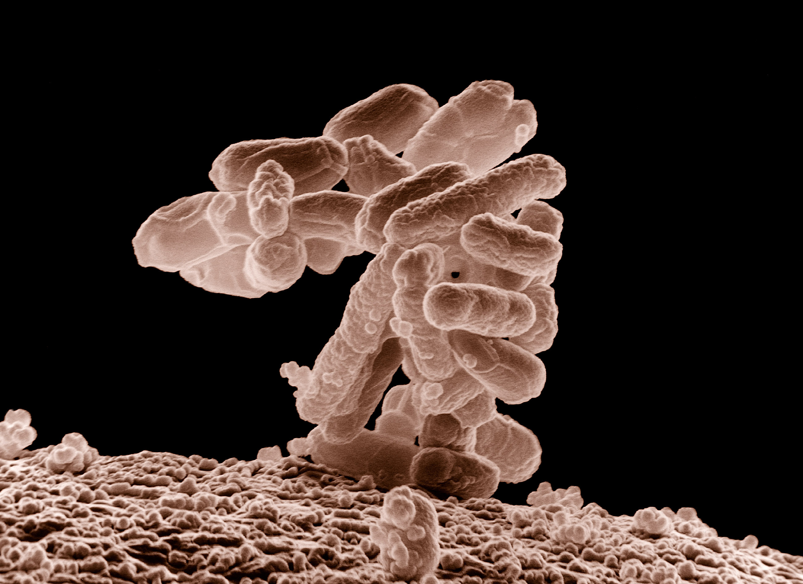
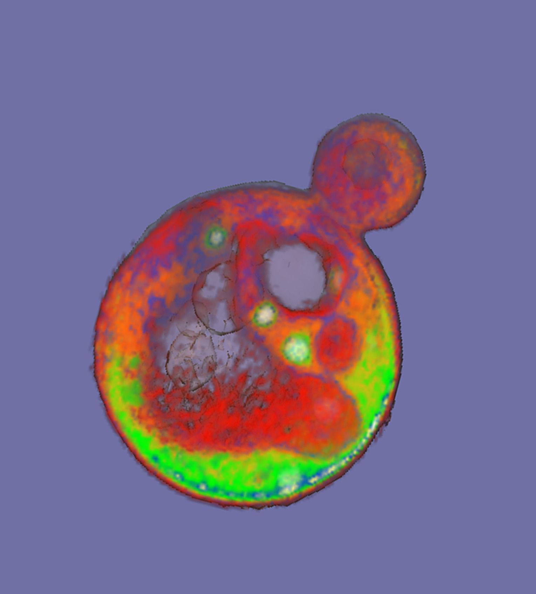
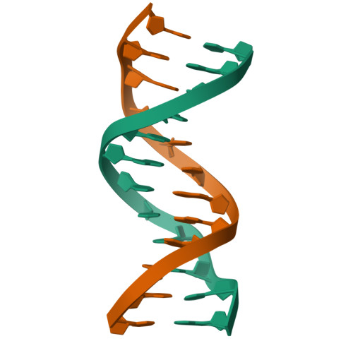
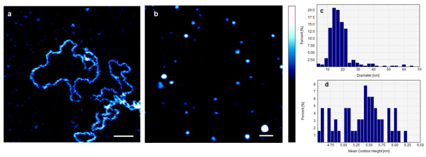
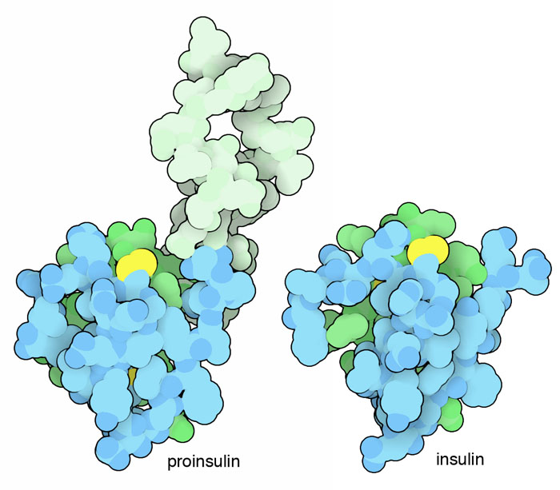
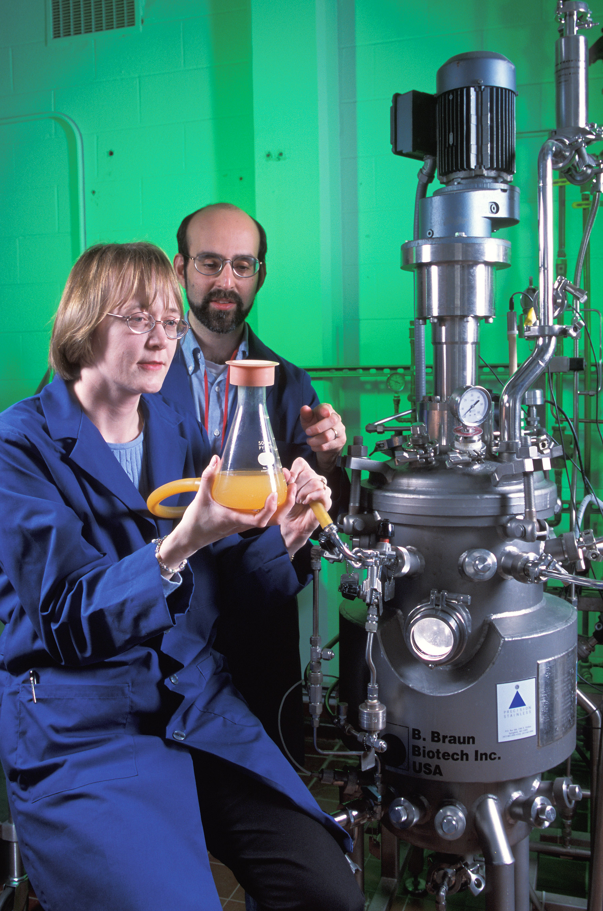
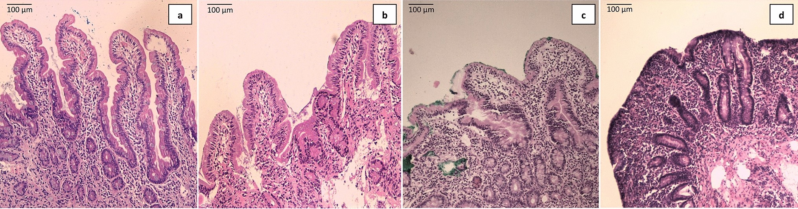
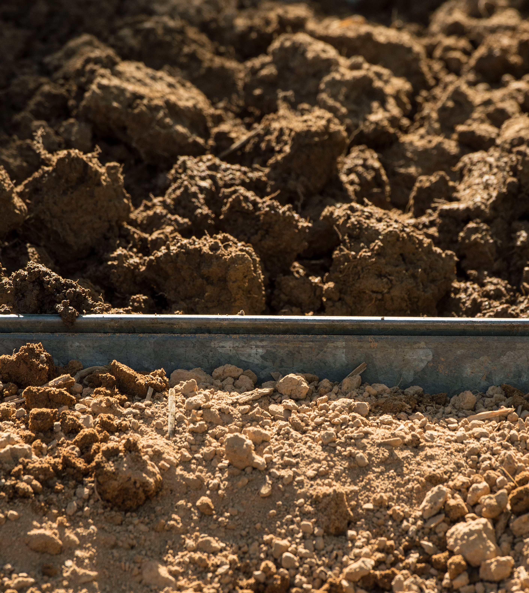
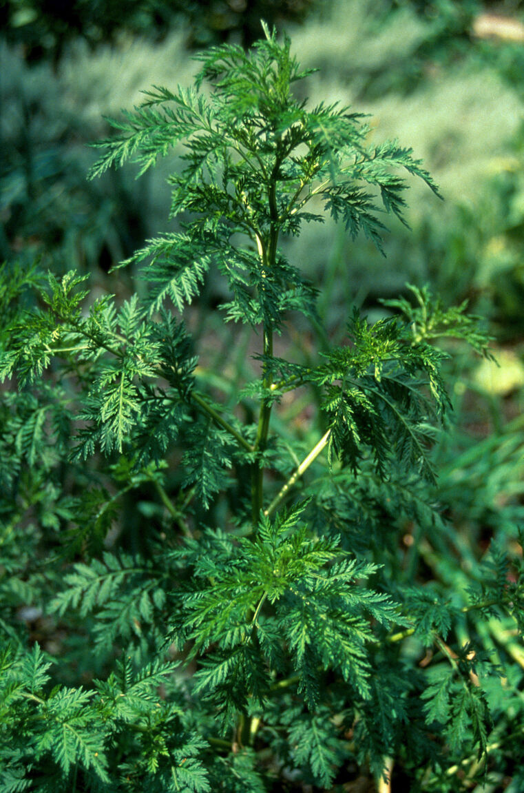
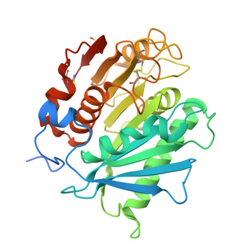

Әл-Фараби атындағы
Қазақ ұлттық университеті
БӨЗ 3 · Микробиология
Генетикалық
түрлендірілген
микроорганизмдер
Қолдану мүмкіндіктері, оң және теріс жақтары.
ЖИ көмегімен талдау және ғылыми негізділікті бағалау.
Орындаған
Әбдіқұл Арслан
Базарбай Спандияр
Тексерген
Болатхан К.
Алматы · 2026

Eric Erbe / Christopher Pooley · Түрдің көрінісі
Негізгі ұғым
ГТМ дегеніміз не?
Генетикалық материалы биотехнологиялық әдістермен әдейі өзгертілген микроорганизм.
Бактериялар
Escherichia coli штаммдары ақуыздар мен метаболиттер өндіруге қолданылады.
Ашытқылар
Saccharomyces cerevisiae жасушаларына жаңа биосинтез жолын енгізуге болады.
Сыртқы көрініс ГТМ екенін дәлелдемейді. Оны генетикалық талдау арқылы анықтайды.

Түстер жасуша бөліктерін ажырату үшін берілген. Бұл фото ГТМ мәртебесін көрсетпейді.
Негізгі ұғымдар
ДНҚ, плазмида және пайдалы өнім

ДНҚ және ген
PDB 1BNA: ДНҚ құрылымы, нақты ген емес.

Плазмида
Abdelhady et al., Fig. 1a, CC BY 4.0.
Микроорганизм
USDA ARS · E. coli түрінің фотосы.

Өнім
David S. Goodsell / RCSB PDB-101.
Плазмида генді жеткізетін вектор бола алады. Жасуша ақуызды синтездейді, кейін мақсатты өнім бөлінеді.
Плазмида барлық ГТМ үшін міндетті емес: генетикалық өзгеріс хромосомаға да енгізілуі мүмкін.
Тәуекел контекстке тәуелді
Өнім мен тірі жасушаны ажырату

Жабық өндіріс
ГТМ биореакторда жұмыс істейді. Қажетті өнім бөлініп, тазартылады.
Мысал: рекомбинантты инсулинScott Bauer / USDA ARS

Тірі биотерапия
Инженерлік жасушаның ағза ішіндегі қызметі мен қауіпсіздігі зерттеледі.
Мысал: SYNB1618 кандидатыHossain et al., Fig. 3a · CC BY 4.0

Ашық орта
Таралу, ортада сақталу және экожүйемен байланыс жеке бағаланады.
Жабық жүйе дерегі жеткіліксізТопырақ үлгілері · Lance Cheung / USDA
Фотолар қолдану ортасын көрсетеді. Олар нақты ГТМ штаммын немесе жүргізілген биотерапияны растамайды.
Нақты мысал · Медицина
Адам инсулинін өндіру
Escherichia coli
Бактерия адам ақуызын өндіретін жүйе ретінде қолданылады.
Goeddel және әріптестері инсулиннің A және B тізбектерін E. coli-де өндірді.
FDA рекомбинантты ДНҚ технологиясымен алынған Humulin препаратын мақұлдады.
Емдік өнім — тазартылған инсулин. Тірі бактерия препараттың мақсаты емес.
A тізбегі жасыл, B тізбегі көк түспен көрсетілген.
Нақты мысал · Биосинтез
Ашытқыдан дәрі прекурсорын алу

Wellcome Collection · CC BY-NC 4.0
Saccharomyces cerevisiae
артемизин қышқылының титрі
Paddon et al., 2013
Мүмкіндігі
Безгекке қарсы дәрінің прекурсорын ферментация арқылы өндіруге қосымша жол береді.
Нәтиженің шегі
25 г/л көрсеткіші дайын дәріге емес, артемизин қышқылына қатысты.
Бұл зерттеу барлық жағдайда арзан өндіріс болатынын өздігінен дәлелдемейді.
Ғылыми мақала · Nature, 2022
ЖИ көмегімен PET ыдырататын ферментті жетілдіру
NATURE 604 · 662–667 · 2022
Machine learning-aided engineering of hydrolases for PET depolymerization
Lu H. және әріптестері

FAST-PETase · RCSB PDB 7SH6
Мақаланы ашу ↗PET пластигін ыдырататын ферменттің тұрақтылығы мен белсенділігін жақсарту.
MutCompute моделі аминқышқыл алмастыруларын іріктеді. Таңдалған нұсқалар зертханада тексерілді.
51 PET бұйымынан алынған үлгілер бір апта ішінде дерлік толық ыдырады. Мономерлерден PET қайта синтезі көрсетілді.
Фермент ерітіндісі, бақыланатын жағдайлар. Нәтиже барлық пластикке немесе тірі бактерияны табиғатқа шығаруға таралмайды.
Lu et al. · doi:10.1038/s41586-022-04599-z · Бастапқы эксперименттік зерттеу
Тірі биотерапия · әсер ету механизмі
SYNB1618: ішектегі фенилаланинді ыдырату
Ішек ішіндегі биохимиялық қызметтің оқу моделі
Нақты микрофотоларға қосылған шартты анимация. Уақыт, қозғалыс және масштаб эксперименттік өлшем емес. E. coli фотосы SYNB1618 штаммын растамайды.
E. coli Nissle негізіндегі кандидат
2021 · Phase 1/2a
Қауіпсіздік пен көтерімділік бағаланды. Метаболиттердің дозаға тәуелді артуы әсер ету механизмін қолдады.
Ерте клиникалық нәтиже ұзақ мерзімді тиімділікті толық дәлелдемейді.
Келесі буын SYNB1934 Phase 3 зерттеуі 2024 жылы тиімділік нысанасына жету ықтималдығы төмен болғандықтан тоқтатылды. Бұл — бөлек кандидат.
Puurunen et al., 2021 · Микрофото: Hossain et al., Fig. 3a · Synlogic, SEC
Салыстырмалы талдау
Мүмкіндіктері мен ықтимал тәуекелдері
Оң жақтары
Инсулин сияқты ақуыздарды өндіру.
Ашытқыда дәрі прекурсорын алу.
ЖИ арқылы перспективалы нұсқаларды іріктеу.
Бағаланатын тәуекелдер
Енгізілген ДНҚ басқа жасушаға өтуі мүмкін.
Тірі жасушаның таралуы мен өміршеңдігі.
Мутациялар, өнім сапасы және жағымсыз әсерлер.
Тәуекел штаммға, генге және қолдану жағдайына тәуелді. Пайда мен шығын нақты технология үшін салыстырылады.
Goeddel et al., 1979 · Paddon et al., 2013 · Lu et al., 2022 · Mandell et al., 2015
Қорғаныс тәсілдері
Биоқауіпсіздіктің бірнеше қабаты
Физикалық оқшаулау
Жабық жабдық, қалдықтарды залалсыздандыру және ағып кетуді бақылау.
Биологиялық шектеу
Жасушаны арнайы қоректік компонентке тәуелді ету тәсілдері.
Тұрақтылықты тексеру
Қорғаныстың мутация мен орта өзгерісіне төзімділігін бағалау.
Бір қорғаныс тәсілі барлық жағдайда нөлдік қауіпке кепілдік бермейді.
ЖИ құралдары · ақпаратты бағалау
ЖИ жауабын бастапқы дерекпен тексеру
ChatGPT құрылымдау мен салыстыруға көмектесті. Ғылыми тұжырымдар мақалалар және ресми деректермен тексерілді.
Walters & Wilder, 2023 · Paddon et al. · Lu et al. · Puurunen et al.
Қысқа оқу бейнелері
Өнім алу және ЖИ көмегімен зерттеу
Жасушадан дайын өнімге дейін
Генетикалық өзгеріс, жасушада өнім түзілуі, өсіру және тазарту.
Болжамнан тәжірибелік дәлелге
ЖИ нұсқаны іріктеуге көмектеседі. Нақты қасиетті тәжірибе анықтайды.
Әр бейне 28 секунд, дыбыссыз. Ғылыми интернет-суреттер мен фотолардан құрастырылған түсіндірмелер, нақты эксперименттің бейнежазбасы емес.
Қорытынды
Пайда мен тәуекелді бірге бағалау
ГТМ-нің құндылығы — нақты міндетті шешуінде.
Сенімді шешімге нақты дәлел қажет.
Мүмкіндік
Дәрілік ақуыздар, биосинтез өнімдері және жақсартылған ферменттер.
Жауапкершілік
Штаммды, қолдану ортасын және әсерді жеке бағалау.
ЖИ рөлі
Талдауды қолдау. Ғылыми тұжырымды бастапқы дерекпен тексеру.
Оқу әдебиеті және ғылыми мақалалар
Пайдаланылған әдебиеттер
ҚазҰУ оқу әдебиеттері
- Шығаева М. Х., Қанаев Ә. Т. Микробиология және вирусология: оқулық. Алматы: Қазақ университеті, 2008. 379 б.ҚазҰУ кітапханасындағы жазба ↗
- Жұбанова А. А., Абдиева Г. Ж., Шөпшібаев Қ. Қ. Биотехнология негіздері: оқу құралы. Алматы: Қазақ университеті, 2006.ҚазҰУ биобиблиографиясы, № 243 ↗
Оқу әдебиеті теориялық негіз үшін берілді. Нақты зерттеу нәтижелері бастапқы мақалалардан алынды.
Толық дереккөздер мен сурет авторлары ↗Негізгі ғылыми жұмыс
Lu H. et al. (2022). Machine learning-aided engineering of hydrolases for PET depolymerization. Nature, 604, 662–667.doi:10.1038/s41586-022-04599-z ↗
Қосымша бастапқы деректер
- Goeddel et al., 1979 · Инсулин
- Paddon et al., 2013 · Артемизинин прекурсоры
- Puurunen et al., 2021 · SYNB1618 зерттеуі
- Mandell et al., 2015 · Биоқауіпсіздік
- Walters & Wilder, 2023 · ЖИ сілтемелерінің қателері